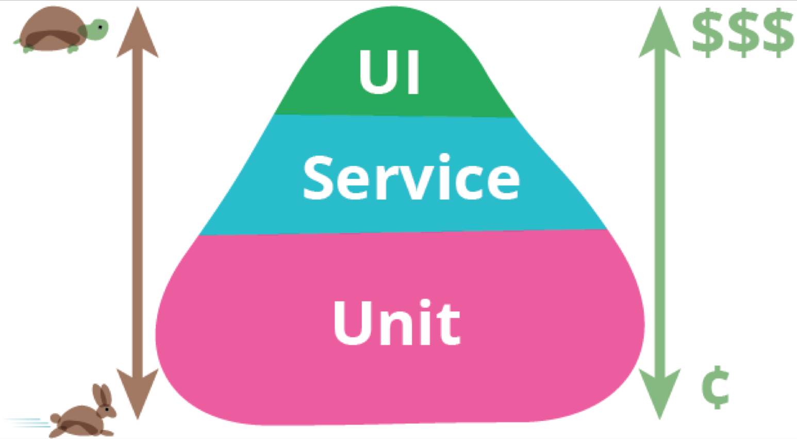

测试金字塔
UI 测试测的是应用中的用户界面是否如预期工作。比如，用户的输入需要触发正确的动作，数据需要能展示给用户看，UI 的状态需要发生正确变化等。
e2e 和 unit 的区别
unit测试是站在程序员的角度测试。把代码看成是一个个的组件。从而实现每一个组件的单独测试，测试内容主要是组件内每一个函数的返回结果是不是和期望值一样。
e2e测试是站在用户角度的测试。把我们的程序看成是一个黑盒子，我不懂你内部是怎么实现的，我只负责打开浏览器，把测试内容在页面上进行操作，看是不是我想要得到的结果。